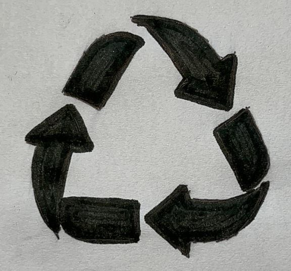
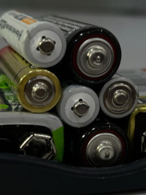

Reciclagem
O que é Reciclagem?
A reciclagem é um processo que visa transformar materiais descartados em novos produtos, reduzindo o impacto ambiental causado pelo excesso de lixo gerado pela sociedade. Existem três tipos de reciclagem, que são classificados de acordo com o processo utilizado na transformação do material reciclável. O primeiro tipo é a reciclagem mecânica, que é o mais comum e é utilizado principalmente em plásticos e papéis, sendo caracterizado pelo alto aproveitamento desses materiais. Nesse processo, o material é triturado e transformado em pequenos pedaços que serão utilizados na produção de novos produtos.
Outro tipo de reciclagem é a química, que é utilizada em materiais como vidro e plásticos, quando não é possível reaproveitá-los através da reciclagem mecânica. Nesse processo, o material é dissolvido em um solvente e é separado em seus componentes básicos, que serão utilizados para produzir novos materiais. Por fim, existe a reciclagem energética, que é utilizada em resíduos que não podem ser reciclados, como restos de comida e lixo hospitalar. Nesse processo, o material é queimado e transformado em energia que pode ser utilizada em outras atividades, como a geração de eletricidade
Símbolo da reciclagem
Reciclagem de Pilhas e Baterias
As pilhas e baterias são dispositivos que transformam energia química em energia elétrica, e são utilizadas em diversos aparelhos eletrônicos, desde relógios e controles remotos até celulares e carros elétricos. As baterias de celulares são essenciais para o funcionamento desses aparelhos, e geralmente são compostas por lítio-íon, que tem alta capacidade energética e é recarregável. Já as baterias de carros elétricos também são compostas por lítio-íon, e são responsáveis por armazenar a energia necessária para movimentar o veículo. Por outro lado, as baterias de carros a combustão são compostas por chumbo-ácido e são responsáveis por fornecer a energia necessária para dar partida no motor.
Apesar de serem extremamente úteis no nosso dia a dia, a reciclagem de pilhas e baterias é extremamente importante para evitar a contaminação do meio ambiente e da saúde humana. Esses dispositivos contêm substâncias tóxicas, como chumbo, mercúrio e cádmio, que podem causar danos graves à saúde se descartados de forma inadequada. Por isso, é importante reciclar esses itens em locais especializados, que separam os materiais tóxicos para que possam ser tratados adequadamente e evitar que essas substâncias prejudiquem o meio ambiente e as pessoas.
Imagem de Pilhas
Como reciclar Pilhas e Baterias
A reciclagem de pilhas e baterias é um processo complexo que envolve a separação de componentes, tratamento de águas e emissões de gases. No Brasil, existem empresas especializadas na reciclagem desses materiais, como a Green Eletron, que realiza a coleta, reciclagem e destinação correta de pilhas e baterias portáteis desde 2010.
O primeiro passo para a reciclagem de pilhas e baterias é armazená-las corretamente. Elas devem ser separadas de outros materiais, como papéis e plásticos, e embaladas em plástico resistente para evitar contato com a umidade e vazamentos. A reciclagem pode recuperar quase 100% do material das pilhas e baterias, e isso é possível graças à separação e tratamento adequados.
Portanto, é fundamental que as pessoas saibam como descartar as pilhas e baterias corretamente. Além disso, é importante conscientizar sobre a reciclagem desses itens para preservar o meio ambiente e evitar danos à saúde. A Green Eletron realiza a coleta desses materiais em diversos pontos de coleta em todo o país, mas existem outras empresas que também fazem o mesmo trabalho.